Olá, eu sou Gustavo Lupi
Desenvolvedor Full stack
Python | HTML5| CSS3 | Java | JavaScript | MySQL | Flutter |
Eu sou o Gustavo Lupi, tenho 17 anos, e atualmente estou cursando Análise e Desenvolvimento de Sistemas na faculdade FACENS.
Já tenho conhecimento em várias linguagens de programação como Python, Java, JavaScript, HTML5, CSS3, MySQL, Flutter e Dart. Comecei a mexer com programação no SENAI, onde tive meu primeiro contato com a área. O SENAI, em conjunto com o SESI, me proporcionou a oportunidade de fazer cursos e me preparou para o mercado de trabalho. Sou muito grato ao SENAI por toda a base e conhecimento que adquiri lá.
Minhas Competencias
-



HTML:
Com HTML, aprendi a estruturar páginas web de forma semântica e organizada, utilizando tags apropriadas para cabeçalhos, parágrafos, listas, links e imagens. Também aprendi a criar formulários interativos, incorporar multimídia e garantir a acessibilidade do site. HTML é essencial para o desenvolvimento de interfaces de usuário eficientes e intuitivas.
CSS:
Com CSS, aprendi a estilizar páginas web, aplicando cores, fontes, espaçamentos e layouts responsivos. Utilizei seletores, pseudo-classes e pseudo-elementos para personalizar a aparência dos elementos HTML. Também aprendi a criar animações e transições para melhorar a experiência do usuário.
JavaScript:
Com JavaScript, aprendi a adicionar interatividade às páginas web, manipulando o DOM e respondendo a eventos do usuário. Utilizei funções, objetos e arrays para criar scripts dinâmicos e eficientes. Também explorei bibliotecas e frameworks como React e jQuery para desenvolver aplicações web complexas.
Java:
Com Java, aprendi a desenvolver aplicações robustas e escaláveis, utilizando a orientação a objetos e padrões de design. Trabalhei com classes, interfaces e herança para criar programas modulares e reutilizáveis. Também explorei frameworks como Spring e Hibernate para desenvolver aplicações empresariais.
Python:
Com Python, estou aprendendo a desenvolver scripts simples e eficientes. Estou explorando sua sintaxe fácil de entender e começando a trabalhar com bibliotecas básicas para análise de dados e desenvolvimento web.
MySQL:
Com MySQL, aprendi a criar e gerenciar bancos de dados relacionais, utilizando SQL para manipulação de dados. Trabalhei com tabelas, consultas, joins e índices para garantir a integridade e performance dos dados. Também explorei técnicas de normalização e otimização de consultas.
 Flutter:
Flutter:
Com Flutter, aprendi a desenvolver aplicações móveis nativas para Android e iOS, utilizando a linguagem Dart. Trabalhei com widgets, state management e animações para criar interfaces de usuário modernas e responsivas. Também explorei pacotes e plugins para adicionar funcionalidades às aplicações.